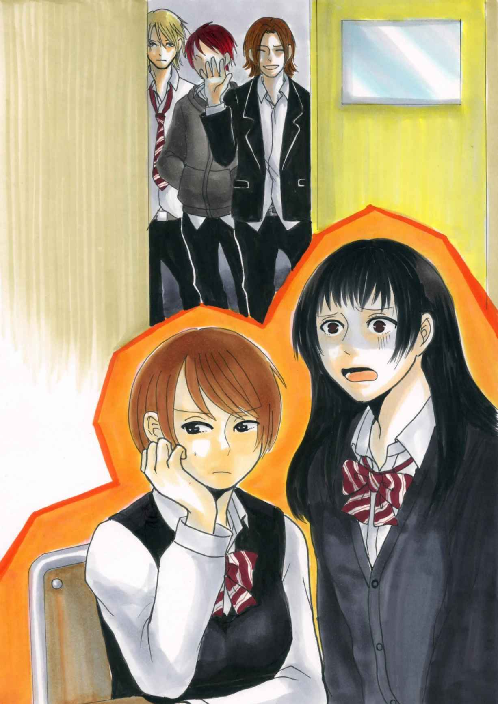
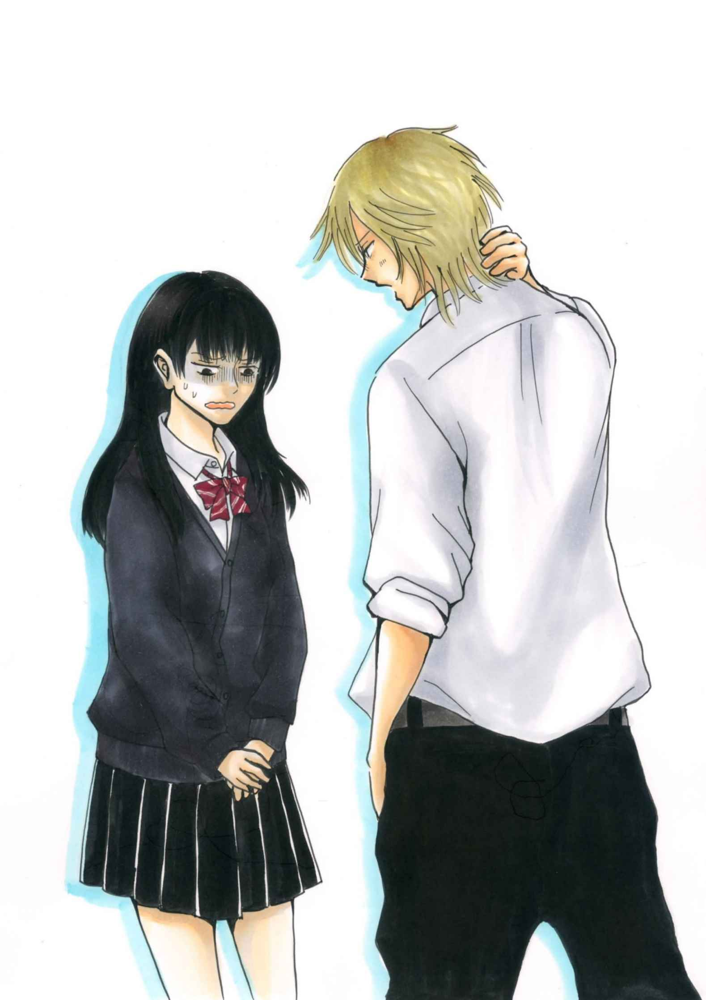
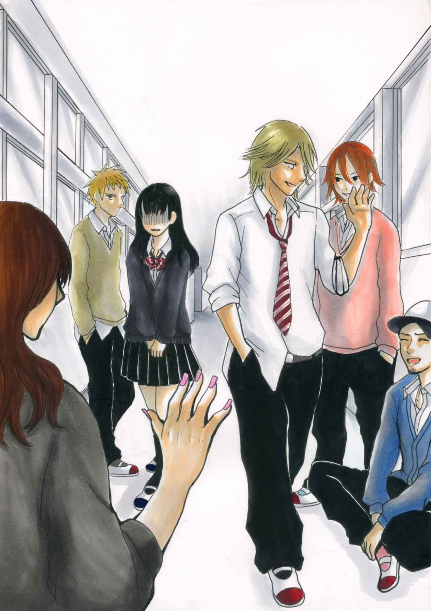
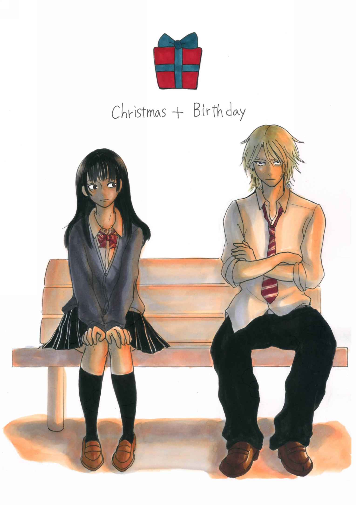
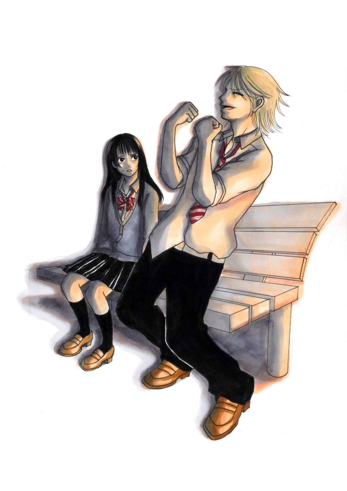

| あたしのカレは不良です！？ | |
| うさこ | |
| nettobunnkohosinosuna (2019) | |
「ねえ、いいよね？」
「や、あのー、ちょっと......」
あたし、如月ナナ。ピチピチ？ の高校一年生。今、人生初のピンチです！
「まさか、断るとか言わねーよな？」
「そんなコトないよね？」
「......」
こ、怖い。誰かー、誰かあたしを助けて下さい。目の前で妖しく笑う五人の先輩達。と、一人だけ真剣な顔をした人。この人も先輩らしい。上履きの色からして三年生だ。怖いってばー！
「ねー、何とか言ってよー」
ふざけてるのか、あたしをからかってるのか、わざと語尾を伸ばしちゃってる。
パンツが見えちゃうくらいの腰パンの制服のズボン。茶色とか金とか赤とかそんな色とりどりな髪の毛。
「付き合ってる奴いないんだよな？」
「悪いこと言わねーから付き合ってやれよ！」
これ、脅迫？
「朋子ー！」
「ど、どうしたのナナ？ 泣きそうな顔してるよ」
「不良が、不良が、助けてー」
「えっ？ 不良？」
「あたし、付き合うことになっちゃったよ」
「はあ？ 意味分かんないって......」
あたしの不幸の始まり。楽しい高校生活を送る予定だったのに......ホント、誰でもいいから助けて下さい。
「それでナナは付き合うって言っちゃったの？」
昨日の放課後に起きた出来事を一部始終親友の朋子に話した。
「だってー。怖い顔で五人が迫ってくるんだもん。どうしよー」
朋子は泣きついたあたしに呆れたように大きな溜め息をついた。
「付き合うって言っちゃったら仕方ないでしょーが。あっ......」
溜め息と一緒にそう言った朋子が、一点を見つめて固まってた。
「ん？」
「ねえ、ナナ。あれって......」
見覚えのある腰パン。色とりどりの髪の毛。

教室のドアを塞いでいるのは間違いなく昨日の不良。いや、先輩達だった。あたしの〈彼氏〉になったらしい先輩もいた。
「如月さーーーん」
如月さんって、あ、あたし？
「......ナナ」
朋子の引きつった顔が『行って来い』と言ってる。やだー！ ムリだから。誰か、助けてー。
「ちょっといいかな？」
そんなあたしの心の中なんてお構いなしに、先輩達はあたしの名前を呼ぶ。ああーー。行かなきゃダメだよね？ 震える足で先輩達の元へ向かった。
「昨日ぶりじゃん」
怖いです。怖くて視線を上げることが出来ない。
「じゃあ、後は二人でごゆっくりー」
そんなふざけた声と一緒に腰パンが去って行くのが分かった。恐る恐る伏せた視線を上げてみると、
「......あっ」
「あー、何かごめんな」
苦笑いしながらあたしに謝る人。昨日、一人だけ真剣な顔をしてた先輩。あたしの〈彼氏〉らしい人。
「あんな大勢で押し掛けられても困るよな」
申し訳なさそうに言うからやっぱり視線を逸らしてしまう。ダメ。真っ直ぐ見れないよ。目がチカチカしちゃうほどの金髪。耳にはいくつものピアス。背も高くてきっと〈イケメン〉の部類に入るんだと思う。この人があたしの彼氏......。
「あー、ホント、マジでごめんな」
また、あたしに謝る先輩。何を言えばいいか分からなくて、口を開くことが出来ないでいた。

そんなあたしを見て少しの沈黙のあと、先輩があたしの耳元で囁いた。
「......放課後、話せるかな？」
"話せません！"
何て言えないよ。あたしはただ首を縦にコクコクと振った。
「よかったー。じゃ、放課後迎えに来るな」
ゆっくりと視線を合わせると先輩はキレイな顔で笑ってた。"怖い"と"かっこいい"ふたつのキモチが交差して思わず頬を赤くした。三年生の教室に帰って行く先輩の後ろ姿。あの人があたしの彼氏だなんて......。
「ナナ、どうだったの？」
「......朋子ーー！」
やっぱり朋子に泣きついた。
あっという間に時間は過ぎて放課後になった。
「はあーーー」
「ほら、行っておいで」
教室のドアの前であたしを待ってるのはあたしの彼氏。あれ？ 名前、先輩の名前って何だっけ？ ふと、そんなことを考えてるあたしの背中を朋子は容赦なく押した。もう行くしかないよね。ドクンドクンと激しく鳴るあたしの心臓。手の指先もゆっくりと先輩の所へ向かう足も緊張で震えが止まらない。金髪。ピアス。着崩した制服。やっぱり真っ直ぐに見ることが出来なくて、先輩の上履きを見つめてた。
「......行こっか？」
コクリと頷いて、あたしは先輩の後ろを歩いた。周りの生徒達の視線が痛い。話しかけられると、「おう！」と挨拶する先輩。

話しかけてくる人達は地味なあたしとは世界の違う人ばかり。不良とかギャルとか......そんな、興味津々な目でみないでよ。目立たないように地味に生活してたのに。どうしてこんなことになっちゃったんだろう。学校を出るとあたしをジロジロ見てくる人も居なくなった。ふうー。ほっと胸を撫で下ろしていると、目の前の大きな背中が急に止まった。
「わっ！」
あたしも慌てて立ち止まった。ゆっくりと顔を上げると明るい金髪とキレイな顔が目の前にあった。
「公園でいいかな？」
「は、はい......」
あたしの返事を待って先輩は横に並んで歩き出した。さっきよりもゆっくりと。あたしに合わせてくれているかのように......。
公園に着くと先輩はベンチに座った。ダルそうな仕草。どうすればいいのか分からずにあたしは突っ立ったままだった。
「座らないの？」
「あ、はい」
ベンチに座ったけれどあたしと先輩の距離はベンチの端と端。
「如月さん」
あたしの名前を呼びながら先輩が距離を縮めてきた。
「俺のこと知ってる？」
えっっ！
「知って......ます」
「ホントに？」
あたしの返事に先輩はニコっと笑った。
「じゃ、俺の名前。言える？」
な、名前......なんだっけ？
「あ......の」
どうすればいいの？ 助けて下さーい。緊張と恐怖とで涙が滲んでくるのが分かった。
「有田 翔」
「......えっ？」
「俺、有田翔。三ーＡ。誕生日はクリスマス。プレゼントとかケーキとか、誕生日がクリスマスだから一緒にされて一回しかもらえねーから損した気分なんだよな」
「......」
「昨日は何か大勢でごめん。ビックリしたよな。こんな俺が言っても信用出来ねーと思うけど、本気で好きなんだ」
本気で好き？ そんなのウソだよ。だって、先輩は不良だもん。

いつも女の人が傍にいて、二股とか浮気とか平気そうで......。
あたしみたいな子供を本気で好きになる筈ない。信じちゃダメ。キレイな瞳に騙されないんだから！
「如月さんはさ、俺なんかと付き合うなんて有り得ないって思ってるかもしんねーけど。でも、絶対に大事にする。だから付き合って下さい」
「......えっ？」
先輩の言葉にポカンとしてしまった。だって、あたし......有田先輩の彼女になってたんじゃないの？ だからこうして放課後に一緒にいるんじゃないの？ 今更「付き合って下さい」って何で？ 理解が出来なくて顔を上げた。先輩はとても真剣な顔をしていた。いつの間にか滲んだ涙は引っ込んでいて、あたしの心の中は戸惑いで一杯になってた。先輩の真剣な瞳から目を逸らすことが出来ない。
「えっと......、あたし......」
「あたし、今、有田先輩と付き合って......」
「ホントごめん。昨日のことは忘れて欲しい。あんな無理矢理なんじゃやっぱダメだよな」
先輩があたしの言葉を遮るようにそう言った。
「如月さんは俺の名前も知らなかったし、興味もねーって分かってる。けど......」
金髪の奥に見え隠れする吸い込まれそうなくらいにキレイな瞳。こんな風に見つめられるとやっぱり目を逸らせなくなる。
「これから好きにさせるから」
先輩がふっと笑った。不良なんて信じちゃいけないのかも知れない。騙されてるのかも知れない。その前に好きでもない人と付き合うのはもっといけないことなのかも知れない。
それなのに、どうしてあたしは......。
「......はい」
無理矢理、彼女にし続けることも出来た筈なのに。いっぱい謝って一度はあたしを解放してくれた。あたしのキモチを大切にしてくれた。そんな先輩を振ることなんて出来ないよ。
「ホントに？」
ちゃんと先輩の目を見て頷くと、
「よっしゃーーー！」
オレンジ色の空を見上げて先輩は大声で叫んでた。
「絶対に傷付けない。大切にするって約束する。ナナ、帰ろっか？」
そっと差し出された手。その手を握ることも今は怖くないよ。金髪、ピアス、着崩した制服。そこに優しさがあるってことをあたしは知ってるから。
☆おしまい☆
